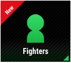
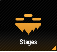
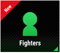
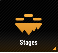

Piranha Plant
 



Believe it or not, Piranha Plant is the first DLC Character added to Super Smash Bros. Ultimate. Originating from the Super Mario Franchise, Piranha Plant would wait in pipes for an unsuspecting player to walk over, then he would come out and chomp the plumber, making them lose a life. You might be wondering why a plant got added, but think about it. If you showed a picture of this little guy to someone of the side of the road, chances are they could identify him. He moves around with his tiny little feet, they are hidden underneath his pot, no longer limited to his pipe. And after years of standing still, this little guy's ready smash! His nuetral special is the Ptooie, a spike ball that moves up and down that originates from "Super Mario Bros. 3". If you press a side on the control stick, he'll blow it in that direction. It's really powerful, being able to hit opponets off-stage. His side special is poison breath, originating from "Super Mario 3D Land". He'll charge up, and once fully charged, he'll breath poison, racking damage in lighting speeds. If you can keep your opponet inside it mor the move's full duration, it'll deal 40%! The up special is the plant-copter, a move completely unique to Smash. Piranha Plant begins to spin his leaves like a helicopter blade, then he'll be able to fly, the leaves doing damage as well. The down special is Long Reach Attack, a reference to how Piranha Plant comes out of his pipe. As long as you hold the button, Piranha Plant will stay in his pot, charging up. Once you realease, he'll stretch out to rediculous proportions, knocking the enemy sky high.